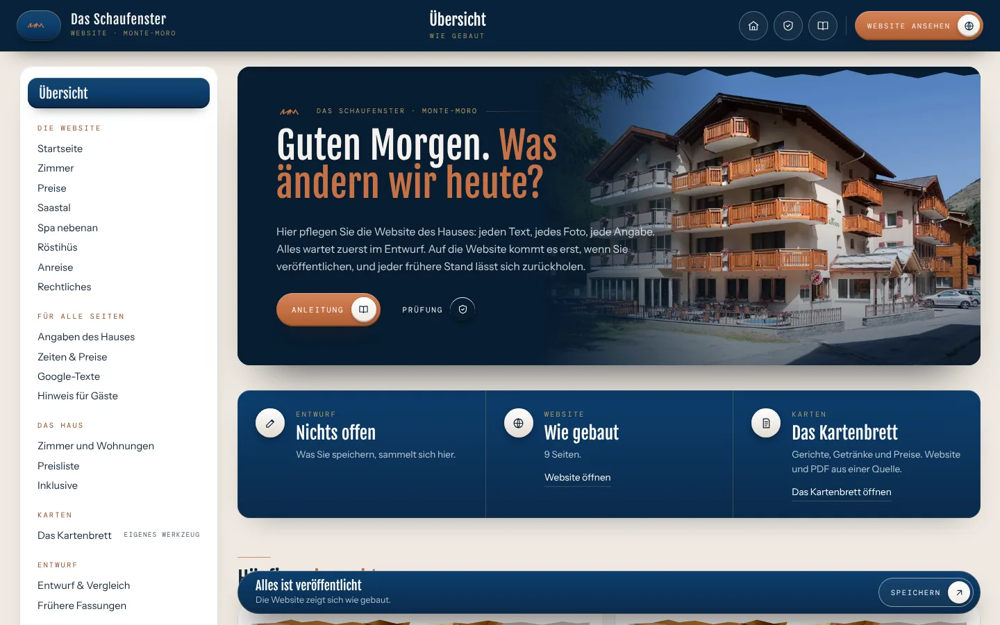
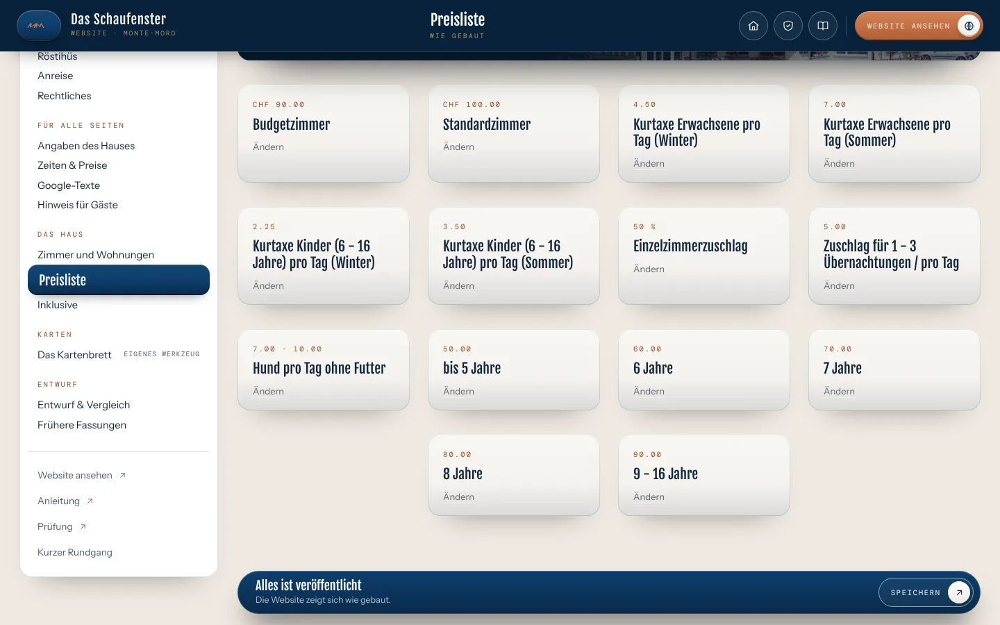
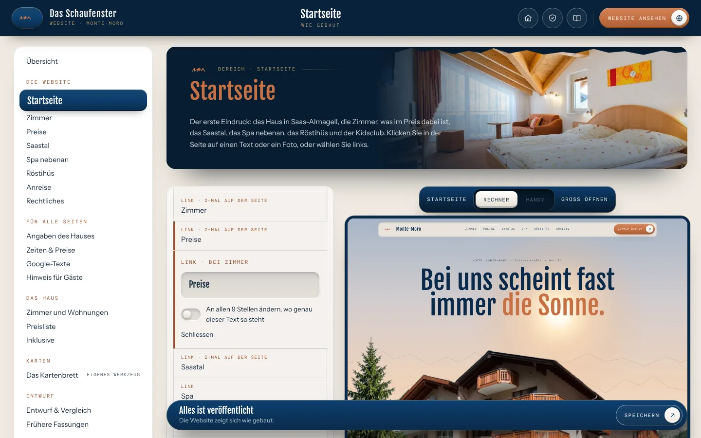
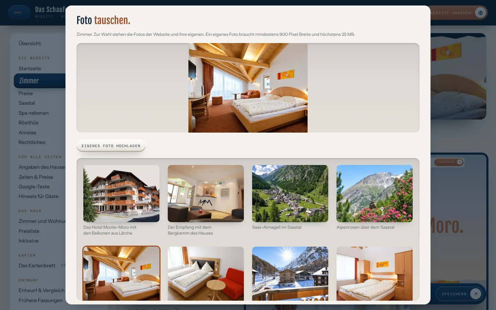
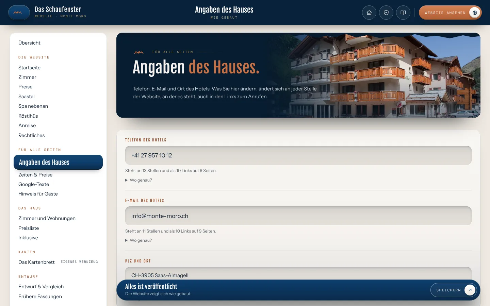
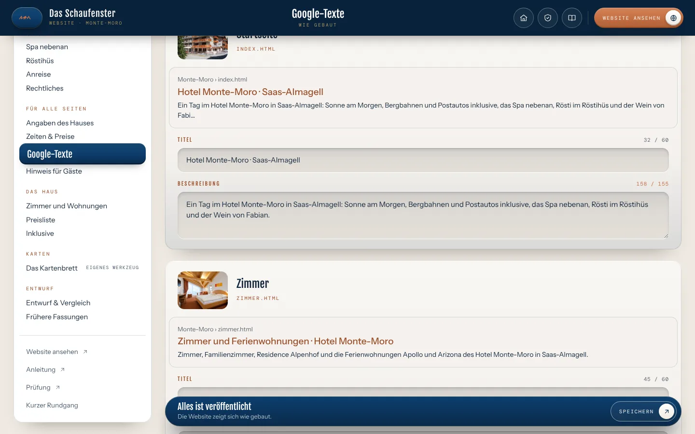
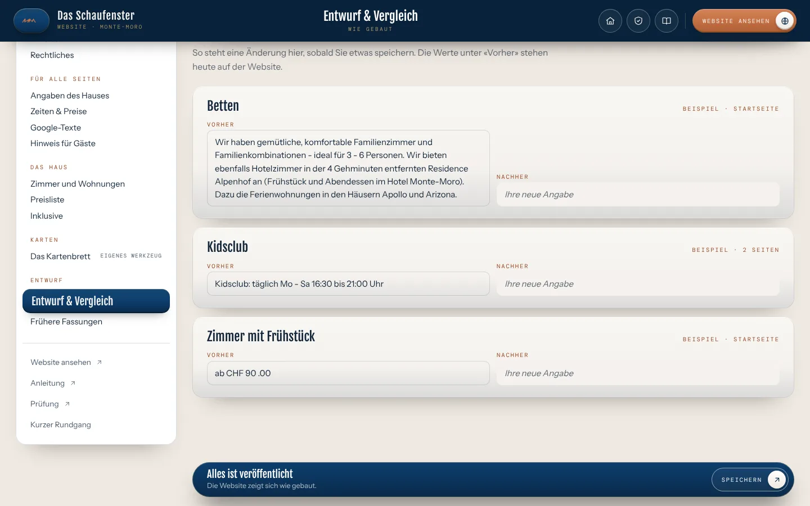
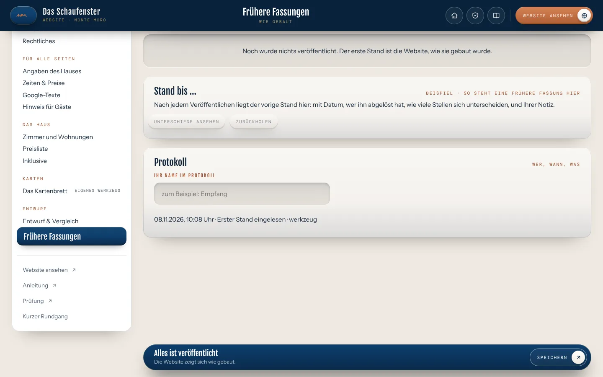

Website pflegen
So pflegen Sie Ihre Website.
Mit «Website pflegen» pflegen Sie die Website des Hotel Monte-Moro selbst. Jeder Text, jedes Foto, die Zimmer, die Preisliste, was inklusive ist, Telefon, E-Mail und die Texte für Google lassen sich hier ändern. Nichts geht von selbst online: Was Sie speichern, wartet im Entwurf, bis Sie es veröffentlichen. Jeder frühere Stand lässt sich zurückholen.
1
Die Übersicht
Oben sehen Sie, ob etwas im Entwurf wartet und wann die Website zuletzt veröffentlicht wurde. Darunter «Häufig gebraucht»: die Aufgaben, die im Alltag am meisten vorkommen. Ganz unten jeder Bereich der Website mit einem Foto, von der Startseite bis zur Anreise.
Links im Rand finden Sie dieselben Bereiche, dazu «Angaben des Hauses», «Zeiten & Preise», «Google-Texte», «Hinweis für Gäste» und unter «Das Haus» die Zimmer, die Preisliste und was inklusive ist. Am Handy öffnet «Bereiche» oben den Rand.

2
Zimmer, Preise, Inklusive
Unter «Das Haus» steht jedes Zimmer und jede Wohnung mit Name, Text, Angaben und Fotos, jede Zeile der Preisliste (Zimmer mit Frühstück oder Halbpension, Zuschläge, Kinder) und jede Zeile von «Inklusive», so wie die Gäste sie auf der Website lesen.
Ein Eintrag lässt sich ändern oder ausblenden und später «Wieder zeigen». Ein neues Zimmer oder eine neue Zeile entsteht mit dem nächsten Bau der Website.

3
Einen Text ändern
Bereich wählen, zum Beispiel «Startseite». Rechts steht die Seite, wie die Gäste sie sehen. Klicken Sie auf den Text, den Sie ändern möchten: links öffnet sich das Feld, die Seite rechts schreibt beim Tippen mit.
Steht derselbe Text auf mehreren Seiten, bietet das Feld «An allen … Stellen ändern». «Wie ursprünglich» holt den gebauten Text zurück. Statt etwas zu löschen, lässt sich ein ganzer Abschnitt ausblenden und später «Wieder zeigen».

4
Foto tauschen oder eigenes Foto hochladen
Klicken Sie in der Seite auf ein Foto. Zur Wahl stehen alle Fotos der Website. Mit «Eigenes Foto hochladen» kommt ein neues dazu: mindestens 900 Pixel breit, höchstens 25 MB, im Format JPG, PNG oder WebP. Das Werkzeug setzt es in vier Grössen für Rechner und Handy.
Die Bildbeschreibung darunter lesen Vorlesegeräte und Suchmaschinen. Ein Satz, was auf dem Foto zu sehen ist.

5
Telefon, E-Mail und Ort
Unter «Angaben des Hauses» steht jede Angabe, die auf vielen Seiten vorkommt, mit dem Hinweis, wie oft und auf wie vielen Seiten. Sie ändern sie einmal, und sie ist überall neu, auch im Link zum Anrufen am Handy und im Link zum Schreiben.
Die Preise und Uhrzeiten im Text, etwa die Zuschläge oder die Zeiten des Kidsclubs, finden Sie unter «Zeiten & Preise». Die Karte des Röstihüs pflegen Sie im Werkzeug «Karten»; auf der Website ist sie hier gesperrt, damit Karte und PDF aus einer Quelle kommen.

6
Hinweis für Gäste und Google-Texte
Ein «Hinweis für Gäste» steht auf Wunsch oben auf jeder Seite, mit Zeitraum von bis: etwa wenn das Haus eine Zeit lang geschlossen ist. Nach dem letzten Tag verschwindet er von selbst.
Unter «Google-Texte» steht für jede Seite ein Titel und eine Beschreibung, so wie sie in der Trefferliste von Google erscheinen. Etwa 60 Zeichen Titel und 155 Zeichen Beschreibung zeigt Google ganz, die Zahl wird rot, wenn es länger wird.

7
Speichern und auf die Website bringen
Solange etwas nicht gespeichert ist, steht unten «Eingaben noch nicht gespeichert» und der Knopf «Speichern» leuchtet. Nach dem Speichern erscheint eine Quittung mit «Vorher/nachher ansehen» und «Rückgängig». Tastenkürzel: Cmd + S am Mac, Strg + S unter Windows.
«Vorher, nachher» zeigt jede Änderung mit dem alten und dem neuen Wortlaut, einzeln zurücknehmbar. «Veröffentlichen» bringt den Entwurf auf die Website, mit einer kurzen Notiz für die früheren Fassungen.

8
Einen früheren Stand zurückholen
Unter «Frühere Fassungen» steht jede Veröffentlichung mit Datum und Notiz. «Zurückholen» legt sie in den Entwurf. Auf die Website kommt sie erst, wenn Sie wieder veröffentlichen. Ganz unten steht immer der ursprüngliche Stand.

9
Wenn etwas nicht klappt
Jede Meldung trägt den Knopf «Was tun?». Er führt zur Prüfung: Sie läuft auch dann, wenn das Werkzeug selbst nicht startet, sagt, was los ist, und was zu tun ist. Gespeichertes geht dabei nie verloren.